Quick Install (Windows only) 4
The ‘Epic’ or ‘Parent’ Tree 18
How the Epic or Story Tree works. 18
Sprint or Iteration Planning 20
To start using the ‘Release Planning’ tool, 24
This was created as an exercise as I simply could not see how the majority of agile tools out there justify their pricing. On top of that I wanted something simple and easy to use that would not distract teams new to Agile and Scrum. This application is the result of that exercise.
It allows you to create and manage Releases, Projects, Iterations, Epics, Stories, Story Tasks and Comments using a tool that is simple, easy to use and only does what it needs to do.
One of the more useful features is that you can have a hierarchy of Stories or Epics, something that is normally only included in scrum tools at a substantial cost. The hierarchy is easily accessible from most places and visible for each Story that is part of a tree. This means Stories can have children (and obviously parents) to an almost infinite level.
This helps with breaking larger pieces of work down into manageable addressable chunks. Work that can then be addressed in a single Iteration while not losing track of the ultimate business value goal, and purpose of the work.
It is worth stating upfront that this is not suitable as a public facing product, but perfect for internal use. The coding standards are also not great, and I am sure a lot could be done to make it more elegant and efficient. That being said, it will happily serve up multiple Projects in excess of 500 Cards each on low-end laptop spec hardware.
Free & Simple to Use
Releases containing Multiple Projects
Multiple Projects
A Story Hierarchy /Tree
Auto calculation of Epic/parent size
Story Tasks, Comments and Tags
Drag and Drop Story & Epic ordering
Users allocated per Project
Multiple Views (List, Tree, Radiator Board)
Burn-down/up and graph
Customisable Story Status, Story Size
Customisable Story text fields
Import and Export of Stories
A number of useful Reports
Attach files to Stories
An audit of changes to a story card
Easy to install
MySQL * (using v 5.0.67 & 5.5.?) or SQLite 3.8.3 *
PHP * (using 5.4.7) incl. Gd2 & Mysqli
Web server * (using Apache 2.2.9 & 2.4.3)
md5 +
JHtml +
Fancytree +
JQuery+ & JqueryUI +
* included in full install
+ included in both full and app only install
Download and extract either the Full install or site only install as detailed below
Browse to the directory containing the extracted files
Browse to udrive/www/pa/include/
Open dbconfig.inc.php and edit as indicated in the file (if you are not sure then don’t change anything)
date_default_timezone_set
dbdriver
dbhost (if NOT using the full install)
dbport (if NOT using the full install)
dbuser (if NOT using the full install)
dbpass (if NOT using the full install)
sqlitedb (if using sqlite)
Defaults to MySQL as the database
Download and extract the ‘PA-Full- Install’ file into a new directory ‘e.g. PracticalAgile ’ on the server you want to use (a local PC is fine for testing)
Browse to the directory containing the extracted files
Open and examine _Start.bat and _Stop.bat
Run _start.bat and make sure both Apache and Mysql start up or
Run _startSQLite.bat and make sure Apache starts up
Navigate to http://127.0.0.1:8088
Log in as admin : admin (Yes I know that is not an e-mail address)
Import the default hints from the included hints,.txt file (Org. Admin menu)
Browse the template and/or create your first Project.
To resize your icons use ‘ _icon_resize.bat’ in the pa/images folder (Default of 24 work fine)
Grab a XAMPP package that include the above requirements somewhere. (‘xampp-portable-lite-win32-1.8.1-VC9’ from PortableApps work well for me)
Install it and makes sure that it works.
Download and extract the ‘PA-Site-Only’ installation file somewhere.
Drop the entire ‘pa’ folder into your document root
Edit pa/include/dbconfig.inc.php and make sure that the server, port, user and password are correct.
Make sure that MySQL is running
Edit the file ‘_setupdatabase.bat’ and correct any paths, ports, usernames and passwords.
Save and Execute the batch file (or the commands from the file)
Stop and restart both MySQL and Apache
Navigate to http://<yourwebserver>/pa
Log in as admin : admin
Change the admin password and e-mail if you wish
Import the default hints from the included hints,.txt file (Org. Admin menu)
Create your first Project
To resize your icons use ‘ _icon_resize.bat’ in the pa/images folder.
Grab a PA-Site-Only archive
Take a backup of both your site and database
Stop the database and site (_stop.bat)
Print out pa/include/dbconfig.inc.php
Overwrite your ‘pa’ directory (do not delete the ‘/uploads’ directory)
Edit pa/include/dbconfig.inc.php if needed (not using the default full install)
Start the database and site (_start.bat/_startSQLite.bat)
Open a browser and navigate to the site
If the database needs updating it will be updated automatically.
Log in to the site.
Do not make extensive edits to the ‘Template’ Project. This forms the base for any new Projects and should contain sensible defaults for your organisation.
Items propagated to new Projects include:
‘Points Scale’
‘Story Types’
‘Story Status’ & ‘Status Colour’
You can amend these after the Project has been created.
A Project encapsulates all the work needed for a product. Think single product, single backlog. Where you need an overlap the use Releases to handle that. Do not mix multiple Projects onto a single backlog.
Creating your First Project (and subsequent ones for that matter)
Log in as ‘admin’ using the password ‘admin’ you will be prompted to change it from the deault
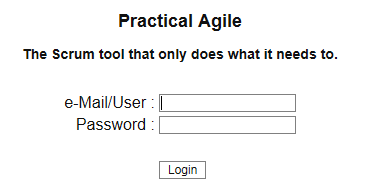
You will be presented with the list of Projects you can access. If you can access only one project, you will be taken directly to the ‘Project Summary’ page. 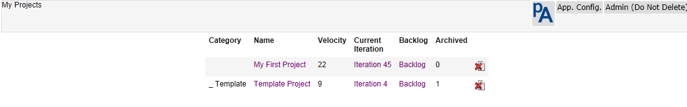
To create a new project, select ‘New Project’ from the ‘Org. Config.’ menu. 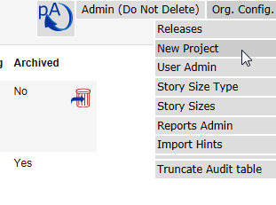
Enter the appropriate Project details or accept the defaults (normally good enough) 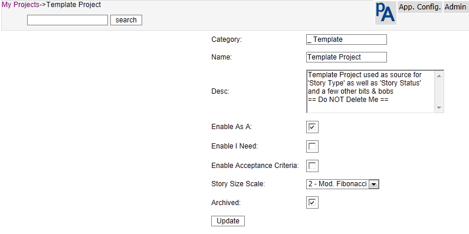
Category - Group Projects by category on the Project list page Use this to group related Projects. It is simply presentational
Name – The Project Name (presented on the Menu and in Project lists)
Desc – A longer description of the Project
Enable As A – When checked, this will enable an additional field for each Story to be used to capture the User role/Truth etc. This can be toggled off and on without losing data.
Enable I Need - When checked, this will enable an additional large text to be used to detail exactly what it is you need. This can be toggled off and on without losing data.
Enable Acceptance - When checked, this will enable an additional large text to be used to detail Story acceptance criteria. This can be toggled off and on without losing data.
Story Size Scale - This is the scale that will be used to size stories in this Project. To create or edit the scale navigate to ‘App Config’ and select the appropriate menu item.
Archived – When checked this Project will not appear in the Project list for users other than the admin user. All project information will be still be retained.
Iterations for Velocity– The number of iterations to average out and use as project velocity. Nnormally between 3 and 8 iterations are used, I default to 5.
Hit Update and that is it! You have created a new Project.
You should now be presented with a new Project list that includes your Project. Here you can edit or delete a Project.
(When a Project is deleted, stories, comments, tasks, Story Status and Story type for that Project are also deleted.)
Select a project from the list and you will be presented with a project summary showing the basic project information as well as a history of previous iterations. Details of the most recent 200 changes are also available from this page.
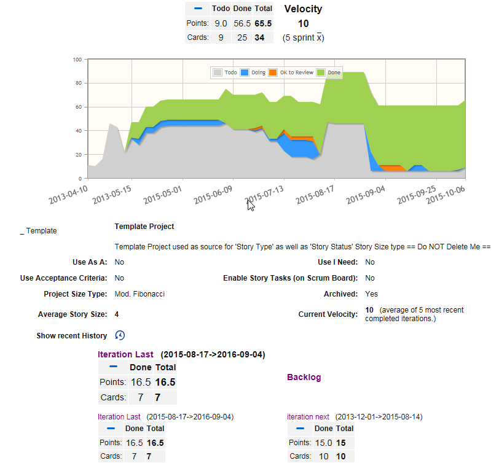
If you want to edit the project defaults, configure it from the <Project Name> menu as follows. 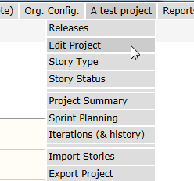
Check that the Project settings are what you expect to see
Other project configurable item is Story Type - Are the defaults suitable. It is strongly suggested that you leave these alone. If you need/want more than this, you are likely to be overcomplicating things. The default types of stories are: Features, Chores, Bugs, and Debt. 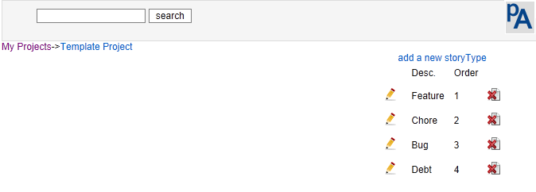
‘Features’ are backlog items that provide direct visible business value to customer.
‘Chores’ are backlog items where work needs to be done, but provides no direct, visible business value to the customer. Bugs represent unintended or erroneous behaviour
‘Debt’ would normally be removed and addressed as a ‘Chore’. A new team is likely to initially create more debt than a mature team and this is a good way to see how much there is.
Story Status – Amend the descriptions and colours to suit your Project and your team, (there is a limit on the number of Status values of 10). There is no attempt to restrict the movement of a Story based on its Status, this would imply imposing a workflow that should best be decided by the team. It also help keep the product simple and easy to use. To enable a Status value, add a description remembering that a description of a single space while difficult to see is in fact a description. Remember that Less is more the more you have the smaller the chance of it being used correctly and kept up to date.
The defaults are the minimum you would expect to see and suitable for most teams
The table below shows some combinations I have seen. ‘List 1’ would be the absolute minimum for most teams, ‘List 2’, the recommended set for more established teams, ’List 3’ for a newer team, and ‘List 6’ is just over-kill.
|
|
RGB |
List 1 |
List 2 |
List 3 |
List 4 |
List 5 |
List 6 |
|
1 |
D0D0D0 |
Todo |
Todo |
Todo |
Todo |
Todo |
Backlog |
|
2 |
A0A0A0 |
|
|
Ready to play |
|
Tasked |
Estimated |
|
3 |
66CCFF |
|
|
|
Unstarted |
|
Ready to play |
|
4 |
3399FF |
Doing |
Doing |
Doing |
In Play |
Started |
In progress |
|
5 |
0066FF |
|
|
|
|
|
Code Reviewed |
|
6 |
A066FF |
|
|
|
|
|
Tested |
|
7 |
FFFF54 |
|
|
|
|
|
Checked In |
|
8 |
FF7F05 |
|
To Review |
Review |
Review |
Review |
Review |
|
9 |
FF0000 |
|
|
|
|
|
Rejected |
|
10 |
A0D050 |
Done |
Done |
Done |
Done |
Done |
Accepted |
When a Project is created, it is created with One Iteration/Sprint, the Product Backlog
Add at least the current Iteration, and stubs for the next few Iterations. Iterations must have valid Start and End Dates. It is up to you to make sure this is the case.
If you are starting out, 2 week Iterations are probably most suitable. Make your Iterations start on the first working day and end on the last working day. This is especially important if you start and end your Iterations on a Monday and Friday. Wednesday to Tuesday or Thursday to Wednesday are probably better start and end days. This way you are then not disrupted as much by the weekends.
If you really must, it is possible to separate your Backlog into product work and technical debt by creating an Iteration without dates. This helps ensure that the Project is accurately sized in the backlog, and that debt and features can be separately viewed and prioritised.
If you do do this, the make sure that you have a policy of addressing at least n Points or stories worth of debt in each Iteration. Do not let it build up to unmanageable proportions
You could also create an iteration without dates to manage your action points for improvement from you retrospectives.
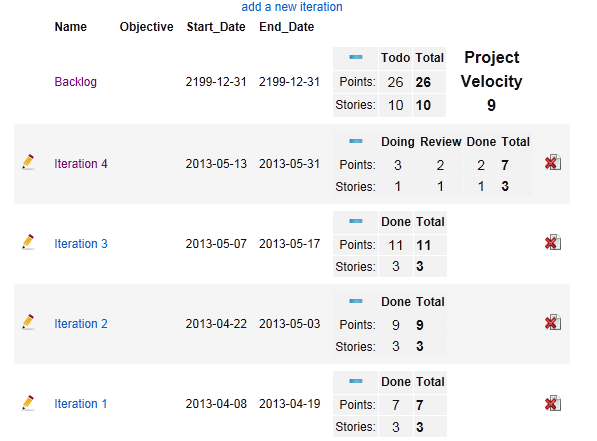
Clicking on any ‘Minus’ sign, hides the Points details and the ‘Plus’ reveals them again.
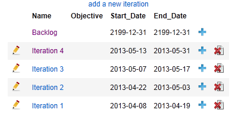
Adding users is a two pass cycle, go to the ‘Org. Config.’ Menu and
Add the users you expect to have access the Project/s, remembering that a single user can have access to many Projects.
Once all the users have been added, go in and edit them to allow access to the available Projects.
Use this page disable users (revoke all access to all project but leave their hitory behind.)
Make the project Administrators.
Or give them read only access to a project
You can only delete users that have not done any work. If they own a story or have been allocated a task, they cannot be deleted and you need to disable them.
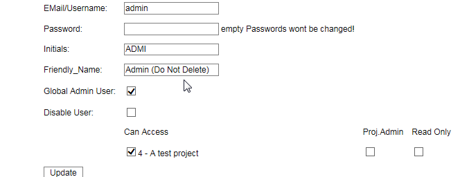
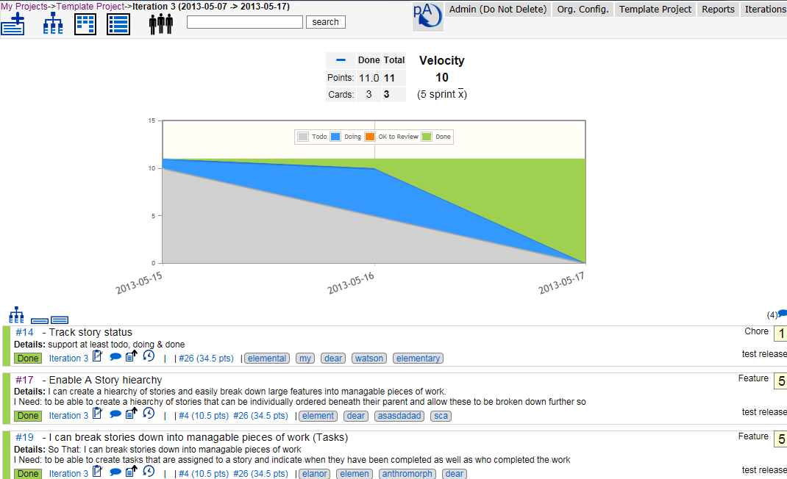
Once you have a project, you can either capture your stories via add Story , or import them via a csv file. For importing stories refer to the section below.
To add stories manually,
Select either the Backlog or the Iteration you want them created in. (Stories can only be created in the Backlog or an Iteration)
In the ‘Story List view” for the ‘Backlog’ or Iterations, Stories that can have work executed against them, are presented in priority order.
This excludes parent/Epic stories. You can only see items you can work on
Drag and drop stories, using the vertical status bar as the handle, to re-order them, an independent order is retained for both Iteration & Epic views.
When the mouse cursor is over a Story, a small menu is presented on the right
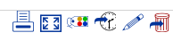 this provides a quick and easy means for printing a single card , viewing the full details, changing the Status, moving to a different Iteration, editing or deleting a Story.
You can also go to the Iteration by clicking the Iteration link on the left. If this is a child Story, the Epic will be displayed after the task & comment micro menu. Hovering over the Epic with the mouse will display the Epic summary detail. Clicking on the Epic will present the Epic Tree with all its children.
You cannot add or delete stories to of from a ‘Locked’ iteration.
While I lean towards using ‘User Stories’ this is not mandatory. You can use whatever card style you need. Simply adjust the project setting to enable or disable the fields you need or want.
Clicking on the Status on the left also allows you to change it, and clicking on the Story ID or double clicking a card will put you it into Story edit mode. This is identical to the add Story view.
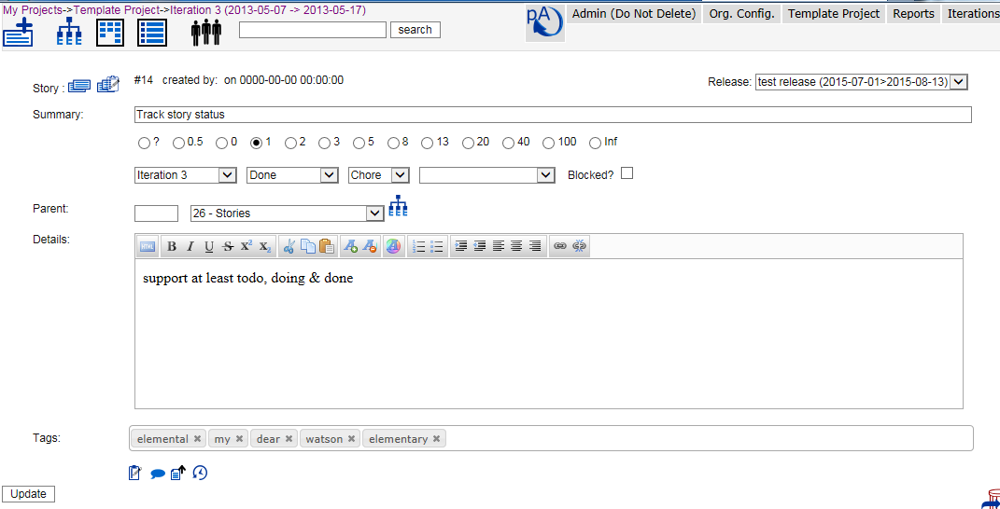
When deleting a Story, tasks & comments are also deleted.
When adding a new Story, they can be added to either the top or bottom of the current Iteration/Backlog by selection the appropriate radio button (default to the bottom) this selection is remembered
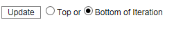
If you want to print individual stories as Cards, hit the print preview and a new tab containing a single Story will be presented in the appropriate size.
If you click in the Story summary, it will be stretched so that the Story can be printed for review with the truth. (another click will shrink it.)
If there are any existing Epic stories in the current Project, they will be presented in a dropdown for easy selection. Otherwise a parent Story number can be input in the box to the left of the dropdown.
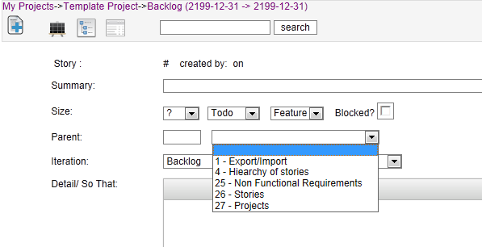
Large text fields have html editing enabled, this helps with linking, highlighting etc
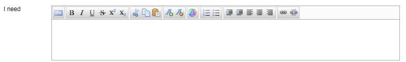
To duplicate an existing Story select the duplicate Story icon and an identical copy of the existing Story (excluding tasks and comments) will be created.
To include tasks in your duplicate select the icon.
A new Story will be created, but you will still be editing the original so take care.
Click on the link presented to edit the new Story
Are linked to a parent Story. These can viewed or added from a Story list view, or while editing a Story. Click the appropriate icon to reveal them.
Tasks have 3 states ‘Not Started’ , ‘Started/Doing’ , ‘Complete/Done’().
They can be re-ordered by dragging and dropping them (use either the edit or delete images as handles.)
Tasks can also be assigned to any person with access to the Project. The two columns to the right are expected and actual hours respectively.
At the moment, tasks are not exported without accessing the database directly.
To change a task Status, simply check the box. There is no need to go into edit mode.
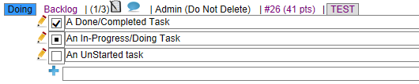
There are 3 Reports associated with tasks, namely:
My Tasks (tasks allocated to me for this Iteration)
Iteration tasks (all tasks for this Iteration)
Iteration Hours (Hours against all tasks for this Iteration)
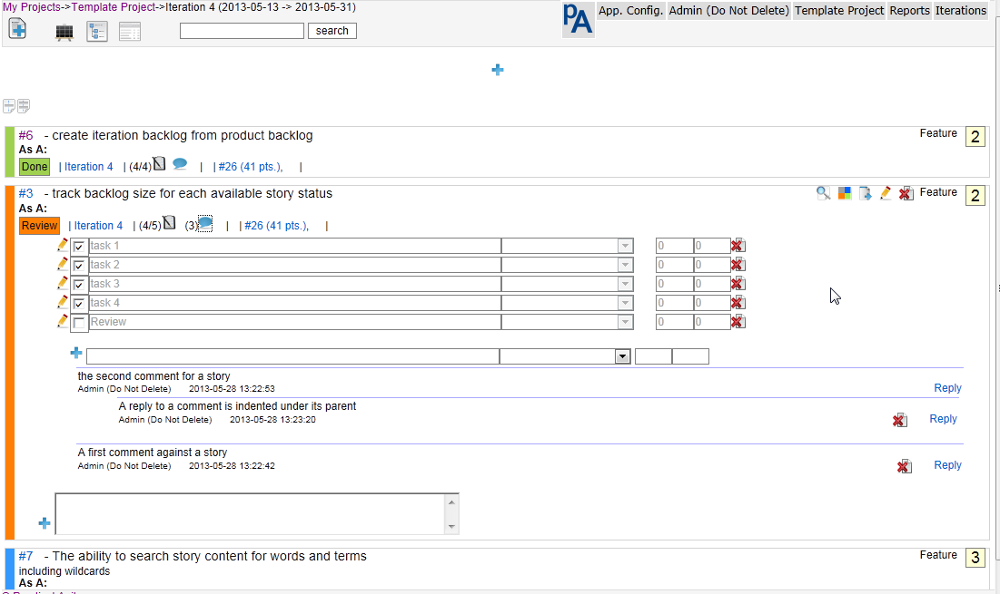
Can be replied to or deleted, not edited. Once a comment has a reply, it may not be deleted. Replies are indented under the comment they are responding to and may have replies themselves.
Files can be uploaded & attached to any Story. Uploaded Files are not stored in the database but are put into an ‘/upload’ directory. Remember to include this location in your backup routines.
The list of file-types that are allowed to be uploaded are detailed in “include/validfiletypes.php” and default to 'xml, txt, pdf, xls, xlsx, doc, rtf, docx, ppt, pptx, pps, ppsx, pub, png, jpg, jpeg, odt, ods, odp’.
Get your sysadmin to update this as needed.
Selecting this will present a history of changes against this card with the most recent changes at the top. There are also reports to support a project audit as well as a full and complete audit for all projects.
The audit table can be truncated or shrunk via the <Org. Config> menu
Hovering the mouse over a parent Story ID or size will present a tooltip containing the parent summary.
To navigate to a parent click on the parent Story (in the last line) and you will be presented with a tree view with that Epic as the base of the tree
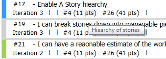
Tags
Tags can only be added/edited when editing a Story, and the Story must be saved to update them. To create a tag that include a space enclose it in double quotes eg. “A tag with spaces”’.
A type-ahead facility that lists all current tags for the project make life very easy when adding Tags to new or existing stories.
Clicking on a tag in either the Story list of the Story edit will return a list of stories in the current Project that contain that tag. Essentially a case insensitive ‘tag: tagtext’ search is performed.
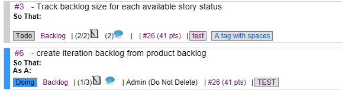
To print all stories in an iteration, including the backlog, select the print icon against the required iteration from the ‘Iterations’ menu. To print small cards at 8 to a page use portrait page orientation. For larger cards at 4 to a page use landscape orientation.
Epics, Features or themes are Top down, but work is performed bottom up.
This means that work can only be performed against the lowest level item in any Story tree. It also means that no Story that has a child Story can be moved into an Iteration or have work performed against it. Once a Story has been moved into an Iteration (work started against it) it can’t have any children.
The result of this is that the backlog only contains work that can be addressed by the team and does not show parents. Use the project, Epic or iteration tree to see how things fit together.
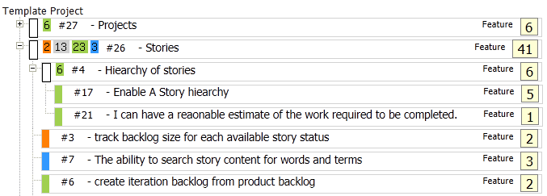
In the example above those Cards with ‘White’ handles are Epics and cannot have work performed against them. As you can see Epics can have children that are themselves Epics with children
To access the Epic view or Story/ hierarchy:
use the Project tree view from the main menu to see the entire Project in a hierarchy
In any list, where a Story has a parent, a link to the parent showing the parent Story number as well as the parent size is provided 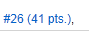 (A tooltip shows the parent summary text). When selected, this presents a tree with the Epic Story as the root of the tree.
How the current Iteration/backlog fits into the product can be accessed from the ‘Iterations’ drop-down menu. Selecting the tree view here, presents a view showing the parents and their children, for all stories in the Iteration. Current stories are highlighted with a blue border. (Epics that this Iteration does not touch are NOT displayed)
To make a Story a child of another, either:
Enter the Epic view for either the Project, Backlog or other Iteration and Drag and drop using the Project or Iteration/Backlog Epic /tree view
Select the parent Story from the list of current parents in the dropdown on the Story edit page
Type the Story number of the parent story in the box to the left of the parent dropdown (not much validation, so take care)
You can do this to an almost unlimited level, but don’t get carried away.
Project Epics are independently ordered and do not change the order of the work in the Backlog or Iteration. This means that the tree can be ordered in a manner that makes sense and at the same time a priority of work can be maintained.
Drag and drop stories to create the hierarchy and order you need. When creating a new parent you are prompted to confirm that this is what you really want to do. This is to prevent you from accidently blatting the points in a ‘real’ piece of work
An Epic does not have a Status of its own, rather it accumulates the Status and Size of all its children. A tooltip indicating the size for each parent Status value is presented as a reminder
eg. Epic #4 comprises 2 ‘Done’ stories totalling 5+1=6 Points.
Epic #26 comprises stories with a mix of Status values and size totalling 41 points.
Velocity, burn-up etc. are calculated on change of Iteration, or, Size or Status of any Story.
These are cascaded up through the Epics as well as to the Iteration and Project totals.
All Points and Status updates are times-tamped so progress during the Project and Iteration can be tracked.
Changes made to a Story while it is in an Iteration, will be reflected in that Iteration, even if the Iteration has ended. If the changes are made before the Iteration has started, they will appear as though they happened on the first day of the Iteration. If they change after the Iteration has ended, they will be reflected on the last day of the Iteration.
e.g. We have a Iteration-1 running from 1st to 14th of a month and Iteration-2 runs from 15th to 28th of the same month. If a Story in Iteration-1 is changed to ‘Done’ on the 15th, the Points will assigned to the 14th (the last day of the Iteration containing the Story). If the changes were made sometime in the previous month, they will appear on the 1st .
To help with Iiteration or Sprint planning sessions, there is a ‘Sprint Planning’ page available from the <Project> Menu.
This allows you to select any two iterations (or the Backlog) in a project and move stories or cards between them. The left hand iteration is the ‘from’ iteration and Right hand one, the ‘To’ iteration.
The ‘To’ or right hand iteration will show you the current number of points in the Iteration.
This way you can easily see what it is you are committing to and what is up next.
It also makes it easier to negotiate work in and out of the Sprint as sizes and priority are nice and visible.
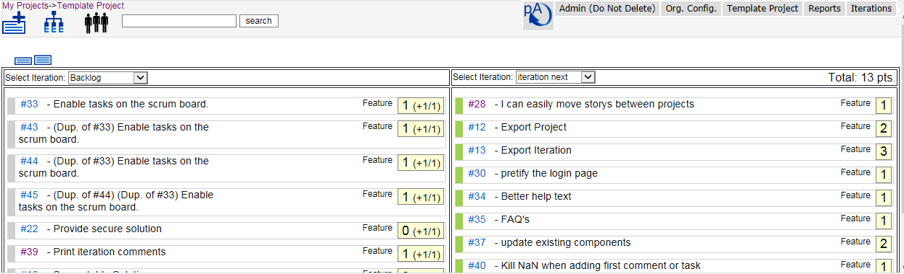
Stories can be exported for further analysis, Reporting, or printing Cards for the radiator board.(use the included excel workbook for quick and easy printing of Story Cards.) Either the entire Project, or a single Iteration can be exported depending on where the export is selected from.
When selected from the ‘Iterations’ Menu, only the current Iterations worth of stories is exported, if selected from the ‘<Project Name>’ menu all stories for the Project are exported. If exporting the Project remember that this includes Epic Stories and if you do a simple sum() of the Points you will end up double or triple counting.
The ‘Project’ export includes an additional column ‘Num_Children’ that is a count of the children for that Story. This helps identify parents when printing Cards etc. The Num_Children column MUST be deleted before attempting to import the result of a Project export otherwise it will fail with an invalid column count.
Stories are written to a csv file that can easily be imported into a spread-sheet, printed etc. (The backlog is simply treated as another Iteration).
To help transferring Project information a rudimentary import feature is provided. You can only import stories for a single Project.
Release, Iteration and Owner columns are reference columns and must be configured for the Project before attempting an import.
The import file must be in the same format as an Iteration export file and all 17 columns must be present and in the correct order, they can however be empty (The number of Children must NOT be present). To get a sample file, simply export your smallest Iteration (It must contain at least 1 Story!!).
Import Behaviour is as follows:
The first line of the import file will always be skipped so make sure that it does not contain data.
When importing, if a Story ID exists, the import will issue an update to that Story, otherwise it will attempt to insert a new record.
Both a Status and Summary must be present, otherwise the import record will be skipped
As weird as it sounds, the import routine also deletes records. To do this, a Story ID must exist, Status an summary must be present and the “Iteration” must contain the string "** Delete **"
The parent column is never updated , so any relationships will need to be manually created after the import has taken place.
Where an Iteration does not exist, the Story is put into the backlog.
If there is an error when importing a record, that record will simply be skipped.
All large text columns for a Story are limited to 32000 characters
There are two types of Reports that are available:
Story list output - presented in a Story list view similar to a backlog view. These Reports are always filtered by the current Project.
Raw data output- are not constrained by anything other than by your imagination. These are presented in a table format with 1 line per returned row.
There are a handful of built in Reports that can be deleted or extended as you wish.
Hitting the Report name will present the results on screen.
Selecting the export icon to the left of the Report name will send the results to a csv file and no Report results will be presented.
Use the Reports admin available from the ‘Org. Config’ menu to edit and create new reports.
Seq - Dictates the order the Reports will appear in the list/menu
Desc - the Report description that appears in the list/menu
Story list output
Essentially you are building a query that returns a list of Cards for the current Project. Something along the lines of
SELECT * FROM Story where Story.Project_ID=”Current Project’" and ([Conditions]) order by [Some order].
Raw data output
These are more hardcode and return pretty much anything.
The sql used to build the Report is a concatenation of the QSQL and Qorder columns (remember to have a space at the end of QSQL or the start of Qorder or you risk a syntax error and incorrect results returned.)
All Reports are available across all Projects. There is a rudimentary Report editor available from the <Org. Admin> Menu
The QSQL & Qorder can include replaceable parameters as follows, otherwise actual column names must be used.
{Project} – Current Project
{User} – Logged on User
{Iteration} Current Iteration (remember that the backlog simply an Iteration)
{Backlog} - Current Project Backlog
The easiest way to get our head around this is to have a look at an existing Report, duplicate and then amend it
Searching for Stories
In the header is a search box that accepts both words and phrases for a text search, or a special search syntax to find stories.
Type text into the box to search for it within the Story, tasks or comments of that Story. A word search is performed and no matches are returned against partial words. It is currently performing a like search (like %text%)
Example: my search
Special Search Criteria are #,owner, Status, size & tag (case is irrelevant)
Story number
You can find a Story by its number by using a hash (#)
Example: #10
To search for the text ‘#10’ prefix it with a space
Owner
You can find stories owned by someone by using owner:< and their initials>.
Example: owner:ppl
Status
Find stories of a particular Status by using Status: <the Status>.
Example: Status: done
Tag
Find stories of a particular Status by using tag: <tagtext>.
Example: tag: bug
or
Click on the tag when viewing a Story.
Size
Find stories of a particular Status by using size:<Size>
Example: Size:5
Type
Find stories of a particular type by using type:<type>
Example: type:bug
Release
Find stories of a particular type by using release:<release>
Example: release:Release 1
Special search tags can NOT be combined either by themselves or with some text (yet).
Having these tags, does mean that if you perform a search using only the tag ( incl the ‘:’ ) you will get unexpected results. Search for a Story containing the tag (including the ‘:’ ) as the start of a search term.
Search results will be presented in a Story list similar to that for an Iteration or the backlog.
Practical Agile allows you to use releases to track progress on an arbitrary body of work, across projects. It uses a simple bottom-up model that allows you to create Releases and assign Stories to them across projects, and then track progress of those releases.
They can only be created by a global admin, but anybody that can edit a Story, can add it to a Release. Details of Releases are available from the Organisation Admin as well as Project admin Menus
Release Planning is available from the Organisation Menu or from the Project Menu. In all instances you are only presented with projects that you have access to.
Project admins can view Release details for those Projects that they have access to but will not see details for Projects that they do not normally have access to. In other words, you will not be able to view all the contents of a Release if you do not have rights to all the Projects in that Release,
Details for a Release are presented in a similar fashion to a Project Tree where the work in the Release, its Parent Epics and their progress are presented to each Project in the Release.
ONLY those Cards in the Release are presented in the tree, this means that the Points against an Epic (the total Points for that Epic) may not equal the work in the Release. Some may already have been Release or schedule for Release at a later date.
Tracking progress on a release is simple. A summary of the card, their status and size is available for the entire release as well as for each project in the release.
Create a Release from the Org. Admin Menu. By giving it a name and expected release date.
Assign at least a single Story to the release by either editing an existing or creating a new one by selecting the release from the release dropdown and saving the card/story.
Once at least one Card/Story has been added to the Release that Project will be included in the Release.
At this stage, the Release will be made available on the ‘Project Admin’ Menu and the ‘Quick Edit’ features for a Release will be made available.
These ‘Quick Edit’ features include:
Adding or removing
The entire Project
All ‘Done’ work
All work not ‘Done’
The contents of any ‘Epic’. (only at that level)
When adding Epics, the work in the Epic is added along with any child epics, the work in further child epics is not added.
When removing Epics from a release, the Work included in an Epic is remove, but not any work included in further Child Epics.
These features only act on Cards/Stories that are not already included in a future or past Release. Eg if a Card is included in ‘Release 5’ it will not be moved to the current Release (Release 4) but remain where it is. Even if it has been completed.
When including all ‘Done’ work for a Project in a Release, any work that has been previously included in Release will remain in that Release even if it is in a later release than the release you are working with
It is good practice to use the ‘Not in Release’ Report to check for any ‘Done’ work, as well as checking later Releases for any ‘Done’ work that could/should be included in the current Release.
Create and import your own hints and tips via the ‘Org. Admin’ menu or import those that have already been supplied in hints.txt in the root of the website.
Use the ‘Iteration Planning’ page available from the <Project> menu to make life easier during Sprint/Iteration planning. Here you can see both the ‘Backlog’ and the ‘Sprint’ or ‘Iteration’ being planned on the same page. Along with a running total of the points in the planned iteration.
To make a Story a child of another, either, drag and drop using the Project of Iteration tree, select the parent from the list of current parents from the dropdown on the Story edit page, or type the parent id in the box to the left of the parent dropdown
Just about anywhere you can navigate to, can be opened in a new browser tab or window. This is really useful for Iteration planning, copy from one Project or Story to another. It does also mean that you can edit a single Story in two places. The last save counts!
Clicking on the Story number (e.g. #11) with let you edit that Story.
Status can be changed from either the mini menu on the Story, or by clicking on the Status on the last line of the Story.
The order in the Project tree is independent of the Iteration/Backlog order.
Hovering over an Epic Story id will pop a tooltip containing the Story summary.
When displaying the backlog, the numbers in brackets after the Story size will be the next empty Iteration this Story will appear in at current velocity. Worst and Best Case Iterations are presented. (w/b)
For Worst Case, the assumption is made that all stories can be completed in a single Iteration and if adding a story to the iteration would exceed current project velocity, the Story is moved to the next Iteration. This is probably closer to reality. It also means that Story order, especially where Story sizes are close to or larger than half the current velocity can have a big impact on the prediction. (this tends to slightly under-load Iterations)
The Best case estimate loads the Iteration with stories until the Points value for the Iteration is equal to or greater than the current Project velocity. (This tends to overload Iterations)
In both cases, any un-sized stories are estimated at the Projects current average Story size.
Looking at the list of Iterations will show you your velocity trend
The Status and Size of all child stories are rolled up to the parent.
The graphs will only display correctly if there are 2 dates to display. This means that you will only see an update if you have changed something after day 1 of the Project/Iteration etc. You also need
Admin users can change anybody’s password. (the is no confirmation, so get it right first time)
Blocked work is highlighted with a RED border.
In the Iteration Epic/tree view, work in the current Iteration has a Blue Border.
The Reports are useful, Use the ones that are already there, and create new ones to support your needs.
Q. How do I view Project progress?
A. View the project summary page, or use the project progress report.
Q. How do I view epic progress?
A. Select the Project/Epic Tree from the header or any story list view. The status for all stories in each epic is presented to you.
Q. How do I create an Epic or convert a story to an Epic
A. View the project/Iteration backlog using the epic tree and drag the child under the appropriate parent.
A. When editing a story, select the parent from the list of existing parents in project from the dropdown
A. When editing a story, type the Parent story number in the 'manual' parent edit box.
Remember that the prospective parent must be in 'Todo' Status (No work against it) and must be in the 'Backlog' (No work Scheduled)
Q. I can’t make a story a child using the Epic tree.
A. You will find that the parent you are trying to use is already in an iteration (ie work scheduled) or not in a Todo Status. Remember, work can only be performed at the lowest level.
Q. I can't move a story in or out of a specific iteration. Why?
A. The iteration has been locked.
Q. I can't move work in or out of a specific release. Why?
A. The release has been locked.
A. Add at least 1 Story to the release via the 'Story edit' form
Q. I can't see releases, why not?
A. you need to be a project admin to view releases.
Q. Why can't I delete a comment?
A. You can only delete comments you have added and then only if there is no reply.
Q. Why can't I delete a story?
A. You only have read-only access to that project, or it is an Epic with children
Q. How do I move a story from one project to another?
A. At the moment, you have to open each project in a different browser tab and copy and paste between them.
A. If you have a large number of stories, it is faster to Export them from the old and import into the new project. Remember to clear the story # and delete them from the original project.
Q. How can I delete a large number of stories from a project?
A. Export the stories you want to delete, change the iteration to "** Delete **" without the Quotes, and re-import them.
Q. Why am I directed to the login page when trying to edit a story?
A. The user you are logged in as does not have access rights to the project containing that story.
Q. I can’t get past the login page or I receive an error message.
A. You account may be disabled
A. You may be trying to use a shortcut to a project, iteration or story that does not exist anymore, check the URL you are using and change it to login.php.
A. Get your administrator to check your username, password
Q. I can’t import anything, what is wrong.
Q. I Can't attach files to a card, what is wrong
A. Your file may be too large or, uploads have not been enabled/.
A. Check your php.ini and make sure that file uploads are allowed and that the upload tmp directory exists, is available and writable, or use the full install that includes the following settings in php.ini.
file_uploads = On
upload_tmp_dir = /usr/local/mysql/tmp
upload_max_filesize = 2M
Q. I am having trouble with my graphs, what can I do?.
A. The way to solve most of the graph issues is to update the app to ver 1.7 or greater as this uses jqplot & not google graphs
Q. When importing a csv file exported from a Report I receive an error along the lines of "Excel has detected that the 'MyOutput.csv' is a SYLK file, .....”
A. This is a known issue with Excel, If the first column heading / value of the CSV file begins with uppercase ID, Excel will interpret the file as being in the SYLK format rather than CSV, as described here: http://support.microsoft.com/kb/323626. change the first column name to rectify this.
The security model is fairly light, it is not there to stop a hacker it is there to prevent accidents, limit Projects a user can access. The application is only meant for use inside a secure environment. And definitely not for a public facing site.
Each page is checked for valid access to a Project before presenting it to the user to mitigate URL manipulation/spoofing.
User passwords are hashed both across the network and in the table of users. Both individual users and a Global Admin can change a user password. (But not see what the current value is)
Users with the Global Admin flag set are in effect a ‘super-user’ with global rights across all Projects.
Edit organisation attributes
They can add/edit/delete users
Create, archive or delete Projects
Change user passwords
Allow users access to Projects
Assign Project Admin Rights
Create & Edit new Story Point templates (numeric only)
Create & Edit Releases
Can Edit Project details
Story types for a Project
Points values for a Project
Edit the contents of Releases
this Setting overrides the read-only user setting
Are for when you want somebody to be able to see what is happening, but not accidentally change or move things about.
The Project Admin setting overrides this setting.
Add, Edit, Duplicate & Delete Story Cards and their contents including
Size
Status,
Tasks
Comments
Move Cards in and out of Iterations or the Backlog
Move individual Cards in and out of a Release
Import & Export Cards
Run Reports
Edit their User details (but not access )
View pretty much everything else related to Projects they have access to.
Burn-up is only calculated when something changes (a Story updated/added, a Status changed or Story moved to a different Iteration)
Text in any field may not exceed 32000 characters (remember that if you are using formatted fields, you will suffer from html bloat!)
A Story can only have a single owner/responsible person (create a tasks for a greater level of detail).
Story Point templates are numeric only.
No e-mail notifications, well not yet anyway
Server times are used
No Integration with other products
Not suitable for public facing use. (security, SQL injection, ... etc)
Exporting and importing Story Tasks.
When editing an Iteration start and end dates after there is work in the Iteration, the Iteration Points history are not moved to the new dates. (Toggle the Story Status or all Cards as a workaround.)
Multiple Date & time-zone handling (for the moment edit ‘include/dbconfig.inc.php’) but still only a single time-zone